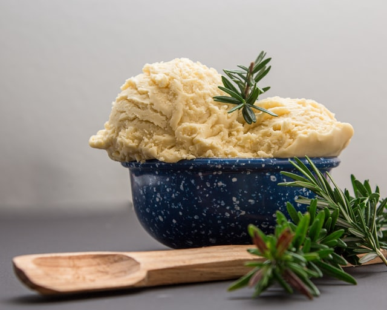

Mashed Potatoes

Ingredients
- 2.5 lbs red potatoes, unpeeled, quartered
- 3 garlic cloves, peeled (depending on size and taste preference)
- 2 tablespoons butter
- 0.5 cup milk
- 1 teaspoon salt
- 0.25 cup grated parmesan cheese
Directions
- Put potatoes and garlic in lg pan
- cover with water
- Bring to a boil
- reduce heat and simmer for 25 minutes, until potatows are tender
- Drain well
- mash with the butter, milk and salt
- Stir in the parmesan cheese